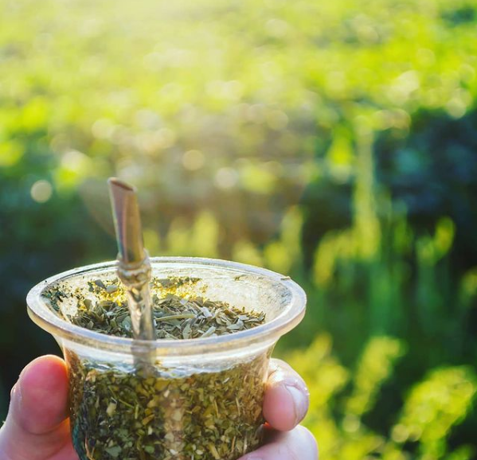
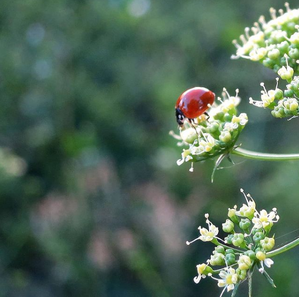

Holis! soy Mariela, soy contadora pero también docente. La pandemia me llevó por caminos inesperados y hoy me encuentro disfrutando el aprendizaje del desarrollo web... nunca imaginé que me gustaría tanto! Se me presentó la oportunidad, me otorgaron una beca y no la dejé pasar. Soy siempre agradecida de lo bueno que pasa en mi vida, y las cosas malas... nos ayudan a ser más fuertes!
Les cuento que me encanta la fotografía! y amo recorrer el pueblo o mi zona para sacar fotos y disfrutar la naturaleza. Les dejo algunas fotis que me encantaron sacar.
 